目录
Ø 仲夏夜
Ø 仙女环
Ø 西新宿标志环
Ø Gloriana
Ø 奥博隆
Ø 彼得·潘
Ø 夺走影子
Ø 温蒂
Ø 梦幻岛
Ø 泡沫经济与流浪汉
Ø 一百年
Ø 美人鱼
Ø 老虎莉莉
Ø Nana
Ø 小叮当
Ø 胡克船长
Ø 毒酒
Ø 倒塌的摩天大楼
Ø 海盗歌谣
Ø 兔子
出典：
仲夏夜，仲夏是指一年中白天最长的一天（即夏至）。在北欧，庆祝夏至是基督教盛行之前的传统。
另外，夏至被认为是魔力增强的一天，女巫举办宴会，妖精们四处走动，药草的效力也会增强。
2004年的夏至是在6月20日，正对应第四章的日期。
² Faerie’s Ring
仙女环，在现实中指的是蕈类族群自然排列而成的环。仙女环直径会生长超过10米，在这些真菌成长和吸收地底下的养分时，就会稳定下来。仙女环主要在森林地区找到，但也会在原野的草坪上出现。仙女环可以从担子果排列成环状或弧状、草皮死亡范围以及环状暗色草皮看出。这类蕈类的菌丝体可能会在环状或弧状区域的下方出现。
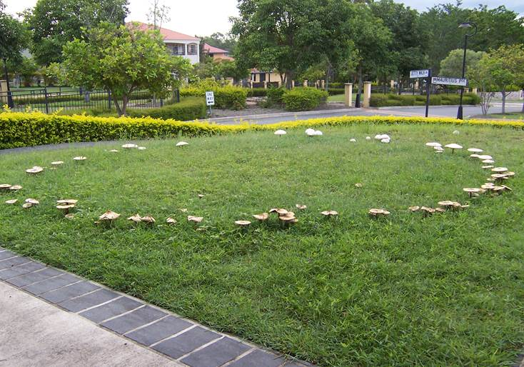
Figure 1. 大自然中的仙女环
作品中的仙女环是指新宿警察局后交叉路口的「西新宿サインリング」（机翻：西新宿标志环）。信号灯和路灯附着在交叉路口周围的结构上，因此从人行道上看就好像是一个巨大的环在漂浮。支撑该结构的四个支柱还配备了照明灯，因此在夜间观看时，这个标志环看起来像一个大冠冕。
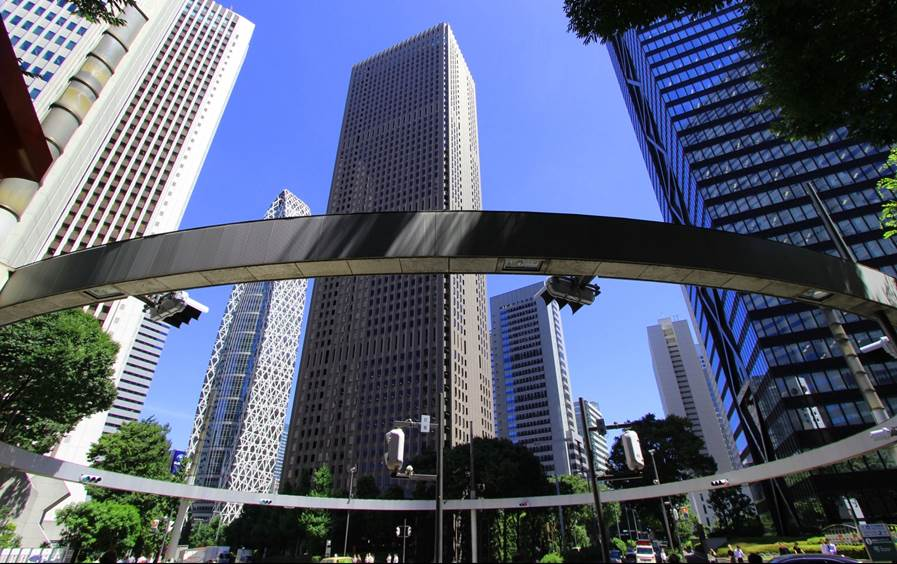
Figure 2. 位于新宿警察署后面的西新宿标志环
角色名出自《仙后》，是英国诗人艾德蒙·斯宾塞于1590年出版的史诗，由于其崇尚亚瑟王传奇中的骑士精神，所以效仿亚瑟王传奇的手法，写下了这篇史诗--仙后，即喻伊丽莎白一世女皇(1533-1603)。
实际人物是缇坦妮雅（Titania），在英国戏剧家威廉·莎士比亚的作品《仲夏夜之梦》中登场的妖精王后（Fairy Queen）。她是妖精王奥伯隆的妻子，有着美丽的外表、魔法能力以及和凡人无异的情感。在后世的奇幻创作中，缇坦妮雅亦时常以妖精王后的身份登场。
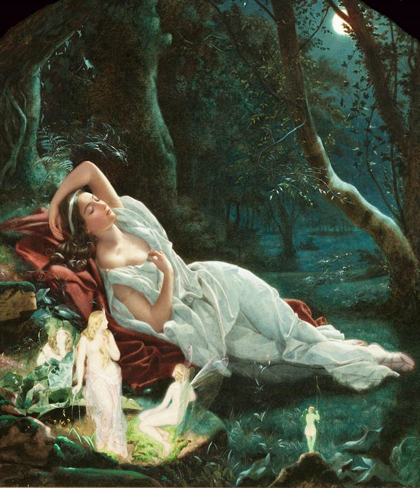
Figure 3. 约翰·西蒙斯绘画的《沉睡的缇坦妮雅》
奥伯隆，是欧洲民间传说中的妖精之王（Fairy King）。他和妻子缇坦妮雅在英国戏剧家威廉·莎士比亚的作品《仲夏夜之梦》中亦有登场。他在剧中的妖精王形象，于公演后深植于欧洲人的心中，并在后世文艺创作中常被引用。
奥伯隆最初以妖精王的身份登场，则是在十三世纪的法国叙事诗《波尔多的荣恩》中，他在故事中是森林和妖精的主人，身高只有三呎，这些特征都是沿自上述矮人阿贝利希的形象。
英国伊丽莎白一世时期，由于政治和经济情况稳定，国民有余力享受娱乐。由于中世纪基督教将妖精视为恶魔，当时欧洲人印象中的妖精大部分都很丑陋，但莎士比亚参考民间传说及过往诗歌文学，所创作的妖精外表可爱、气质高雅。这些特质都获得当时人民的青睐，奥伯隆也不例外。莎士比亚为了打动平民百姓，将《仲夏夜之梦》中的奥伯隆设定成脾气差、爱吃醋，性格与凡人无异。
在奇幻故事中，奥伯隆大多有着王者的威仪，兼有妖精的特质和人类的个性。他和妻子缇坦妮雅会运用魔力干涉凡人生活、对其恶作剧、斗智。
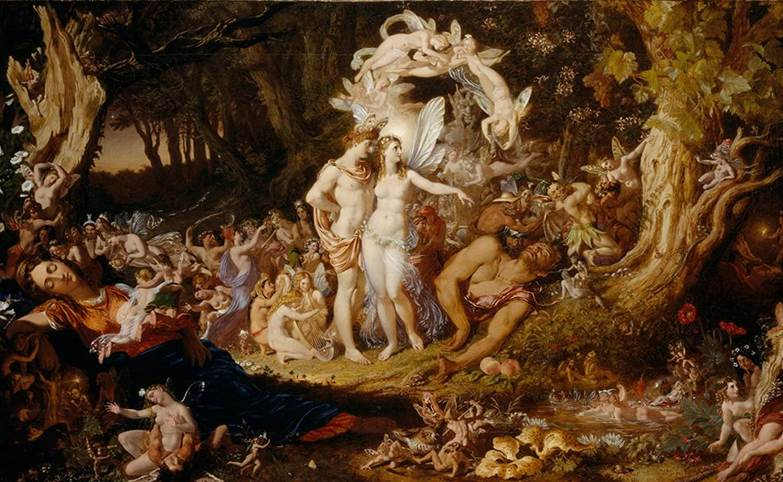
Figure 4. 约瑟夫·诺埃尔·佩顿绘画的《奥伯隆与提泰妮娅言归于好》
《仲夏夜之梦》，是威廉·莎士比亚在约1590年－1596年间创作的浪漫喜剧。它描绘了以雅典大公忒修斯和希波吕忒婚礼为中心的一系列故事。包括四名雅典恋人和六个业余演员的冒险经历，而森林里的仙子们则在背后操作它们的命运。本戏剧是莎士比亚最流行的剧本之一，在全世界都有上演。
故事大纲：缇坦妮雅在《仲夏夜之梦》中是个外表美丽、性格高傲的妖精王后。她的丈夫奥伯隆想让她喜爱的一位人类调换儿成为自己的仆人，但缇坦妮雅不肯。夫妻于是起了争执，天气因他们的魔力而产生异变。缇坦妮雅坚持拒绝丈夫的要求后离去，愤怒的奥伯隆决定教训他高傲的妻子。他交给妖精仆人帕克一种能让人迷恋上醒来后见到的第一个对象的花朵汁液，命令帕克用此花来对缇坦妮雅恶作剧。帕克于是让在森林休息的工匠波顿变成驴头人身的怪模样，并在熟睡的缇坦妮雅眼皮上滴上花汁。缇坦妮雅醒来后看到波顿，觉得他的驴头很可爱、向他示爱，并吩咐仆人照顾波顿。而笨拙的波顿则觉得这一切都是一场梦，因此没有任何回应。后来奥伯隆心生悔意，在缇坦妮雅睡着后解除了她身上的魔咒，并将波顿恢复原样。缇坦妮雅醒来后感到羞愧，与丈夫和好。
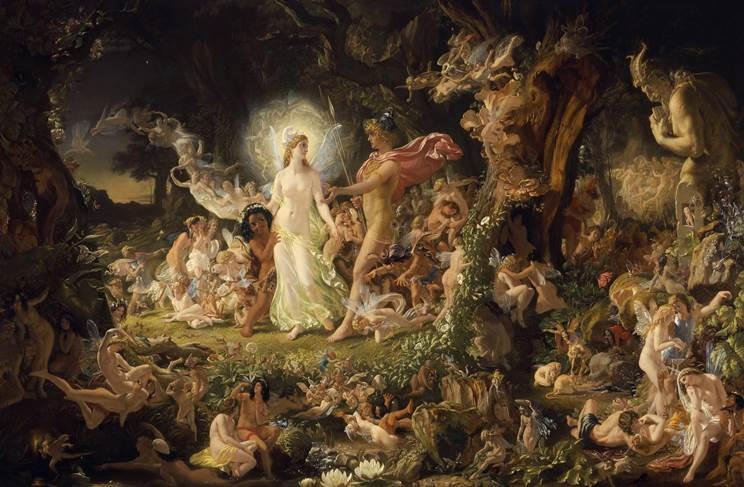
Figure 5. 约瑟夫·诺埃尔·佩顿绘画的《奥伯隆与提泰妮娅的争执》
彼得·潘（Peter Pan）是苏格兰小说家及剧作家詹姆斯·马修·巴里（JM Barrie）笔下的虚构人物，为剧作《彼得·潘》中的主角之一。是个性情豪迈奔放，充满好奇心的小男孩，他会飞，永远不会长大。彼得·潘的名字是源自希腊神话中的牧神潘，以及他所照顾的卢埃林·戴维斯兄弟中的彼得·卢埃林·戴维斯。
彼得·潘是遗失男孩（Lost Boys）的首领，在梦幻岛冒险，其中遇到了小叮当、海盗、人鱼及美国原住民，偶尔也会遇到从梦幻岛以外的世界来的普通小孩，像是温蒂·达林（彼得·潘唯一喜欢的人）。巴里有二部作品提到彼得·潘，彼得·潘也出现在许多卡通、影片及商品中，都是衍生自巴里的作品。包括1953年的动画电影《小飞侠》、2003年的真人电影《小飞侠彼得·潘》等作品。
在原著中，彼得·潘被描绘成一个自私且善恶不分的孩子，而不是一个勇敢的英雄，并且他致力于在危险的地方（例如温蒂的家）玩耍。
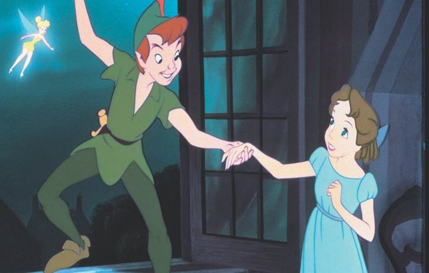
Figure 6. 迪士尼《小飞侠》电影中的彼得潘，小叮当，和温蒂
仙后把奥博隆的影子借给灰流，来找到奥博隆的位置，并扣留了灰流的影子作为人质。这段情节出自《彼得潘》，当彼得潘进入主角温蒂家的时候，被宠物狗Nana吓跑，但他的影子被抓住。温蒂把影子装进了她的抽屉，以防影子受到伤害。后来彼得潘和小叮当（tinker bell）回到温蒂家取回了影子。
指温蒂·达林（Wendy），《彼得·潘》中的主角之一。在原剧作及小说中都没有提到她的年龄，不过有提到她“大约和彼得潘一样大”，因此大约也是12岁到13岁。温蒂在一开始遇到彼得潘时，立刻表现出对他的崇拜。温蒂和彼得潘一様，也刚进入青春期，彼得潘是个拒绝长大的男孩，但温蒂和他不一様，她一开始犹豫要不要去梦幻岛，后来她和彼得潘一起去梦幻岛探险，而且享受这段旅程。最后她还是决定回到正常世界，而且接受要长大的事实。
彼得潘和梦幻岛的遗失男孩希望温蒂当他们的“妈妈”（他们对这个角色只有隐隐约约的印象），她暂时的接受了这个请求，帮他们作许多家中的工作。
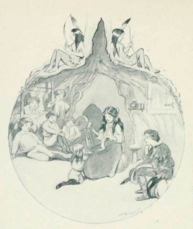
Figure 7. 温蒂和遗失男孩，奥利弗·赫德福德绘于1907年
星巴克咖啡，一家起源于美国西雅图的咖啡连锁店（应该没人不知道吧-_-）。
游戏中的"second star”指的彼得潘提出的前往梦幻岛的方法，根据《彼得·潘》原文："second star to the right, and straight on till morning"。因此这家星巴克要符合“second star”，也就是全新宿第二家星巴克的条件。符合这个标准的是新宿南部露台（Shinjuku Southern Terrace）的一家。
顺便说一下，雨森和Oberon在新宿街的伊势丹百货公司附近会合，并通过新宿站的东南/东出口飞行，新宿南部露台是正确的方向。而星巴克东南方附近的新宿御苑（介绍请见第三章）就极有可能是第四章的取景地。
PS：在2004年《粉丝俱乐部公报》第13号上发布的新宿地图插图中，Southern Terrace商店被标记为“从右边开始的第二颗星”。
Figure 8. 位于南部露台的星巴克，背后为NTT代代木大厦
梦幻岛是一个虚构的岛屿，出现在JM巴里及其作品的基础上，是一个虚幻的地方。彼得·潘，小叮当，失落的男孩和其他神话人物和生物生活在这里，但是并非所有人来到梦幻岛的人都会停止变老。 这个词语经常被用来比喻永恒的童年，永生和逃避现实主义的概念。
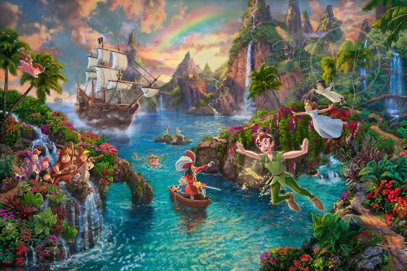
Figure 9. 关于梦幻岛的绘画
² Their average age is over a hundred!
《彼得·潘》作为戏剧首演于1904年，距Forest的2004年正好100年。
Babel是错译，原句指的是泡沫经济时代，应该用bubble比较好。由此推测第四章那些孩子的原型可能是公园中的流浪汉，就顺便介绍下日本的流浪汉问题。
多年来，流浪汉一直是日本社会难以根治的课题。上世纪泡沫经济之后，失业的临时工成为日本流浪汉的主要来源。令人避而远之、发臭、肮脏，这三大特点也让日本社会对流浪汉群体冠以“3K党”（对应的三个日语单词开头字母均为K）的蔑称。繁华的新宿站西口地下（Alice章节中电器街的所在地）一度还成为“纸箱村”，最多聚集过200人左右的流浪汉露宿。
厚生劳动省的调查显示，约八成五的流浪者野宿固定的地方，其余一成五则未固定。固定的地方依次是公园、河边、路旁和车站。此外，桥下、堤防、树丛乃至墓地等处，都可看到流浪汉的行踪。伴随东京对市内主要公园等公共设施进行改造，客观上驱逐了留宿于此的流浪汉们，还曾引发流浪汉支援团体的抗议活动。据统计，日本政府界定的流浪汉人数全国大约在1万人左右。看上去，这个数字似乎微乎其微，但日本专家指出，由于流浪人群除了露宿街头外，还有大量借宿他人家庭等“隐藏式”群体。因此，流浪汉又具有广义范畴，其实际数量要多得多，且难以准确把握。
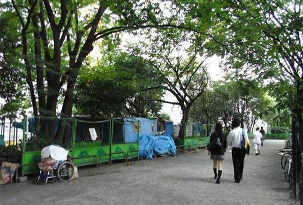
Figure 10. 公园中的流浪汉帐篷
美人鱼是居住在梦幻岛上的众多神秘生物之一。它们首先出现在迪斯尼1953年的经典动画电影《彼得潘》中，该片改编自巴里1911年同名小说。迪斯尼对它们的刻画虽然不像巴里书中所描绘的那样阴暗和险恶，但却更具交流性和文明性（尽管仍然有些不道德）。
美人鱼在性格上似乎有些懒惰，自负，浅薄和调皮。他们也很爱玩，很不道德，对与错之间毫无道理。这一点在彼得·潘的批评她们骚扰温蒂的时候尤为突出，其中一位随随便便说他们“只是想淹死她”。
美人鱼除了对胡克船长的恐惧外，似乎并没有任何真正的关心或麻烦。但是她们全都非常迷恋彼得潘，彼得潘也经常去人鱼居住的湖边来调情，并用他的冒险故事来逗乐她们。与小叮当类似，当其他任何女性引起彼得的注意时，美人鱼也会嫉妒。
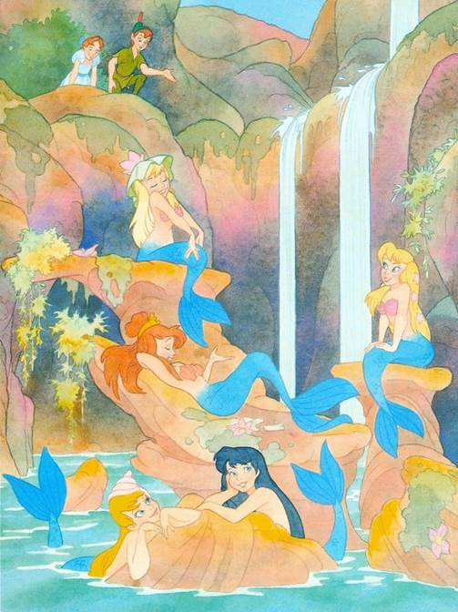
Figure 11. 梦幻岛上的美人鱼
她是居住在梦幻岛上的“美洲印第安人部落”的公主。 她显然已经到了可以谈婚论嫁的年龄，但是她拒绝任何求婚者，原因是她喜欢彼得·潘。 她嫉妒着跟彼得潘关系密切的温迪和小叮当。
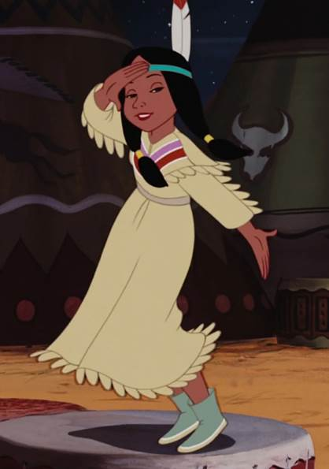
Figure 12. 印第安少女Tiger Lily
温蒂家三个孩子的保姆，是一只会说人话的纽芬兰犬。娜娜非常爱护孩子们，并把他们当作自己的孩子对待。在原作中，娜娜多次赶走了彼得潘，并且有一次抓住了他的影子。
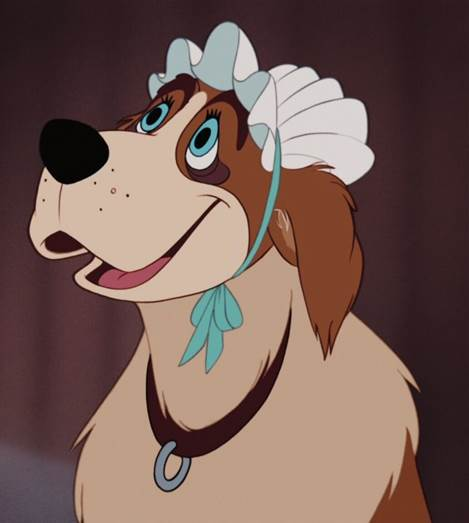
Figure 13. 保姆犬Nana
玩过《DOTA》或《魔兽争霸》的人都知道，“tinker”这个词是指“修补匠”的意思，而这也是它在民谣中的原意。在《彼得潘》中，tinker bell（小叮当）是修理锅和水壶的仙女。小叮当不会说话，她只能通过面部表情、动作和摇晃身体发出叮叮当当的声音，因此只有熟悉童话语言的人才能理解她说的话。
小叮当的性格非常极端，她对彼得·潘对极度忠诚和无私奉献，同时也极为嫉妒受彼得潘欢迎的温蒂。原作解释了她的极端性格，因为仙女的娇小的身材，使她无法保持一种情绪太长时间。
小叮当不时会做出些恶意的举动，例如让遗失男孩用箭射温蒂（在迪士尼的电影则是几乎要砸死温蒂），或是将彼得·潘的藏身之处告诉铁钩船长，认为他会抓温蒂，不会抓彼得·潘。后来叮叮发现她做错事之后，她喝下了铁钩船长留给彼得·潘的毒药（在迪士尼的电影则是将铁钩船长的炸药推走）。
在小说的最后，当彼得潘找到已经结婚生子的温蒂时，提到Tinker Bell在温蒂和她的兄弟离开梦幻岛的那一年就去世了，而彼得已经不再记得她。
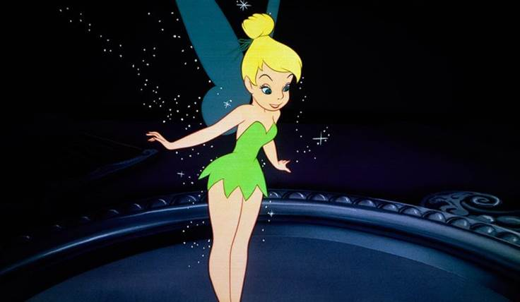
Figure 14. 小叮当Tinker Bell
胡克船长是迪斯尼1953年动画长片彼得·潘的主要对手，他是海贼船快乐罗杰号上嗜血的指挥官，以及梦幻岛的祸害。
胡克早就放弃了公海航行，转而把精力花在向砍掉自己左手，并将其喂给一直追逐自己的鳄鱼Tick-tock的彼得潘复仇。虽然胡克一直是彼得潘最大的对手，但是胡克注定会失败，有时是因为彼得·潘的飞行能力，但更多的是因为他的忠诚部下Smee先生的无能和脆弱。
胡克的挫败感是可以理解的;他在对手面前失去了一只手，不断地被鳄鱼追捕，而且无法像彼得·潘一样飞翔，这些因素可以说使他成为了迪士尼最同情的恶棍之一。
另外，胡克船长毕业于英国著名学校伊顿公学，在《彼得潘》的最后一版舞台剧中，胡克船长高喊着伊顿公学校训消失于海中。在原作中，这样的人被作者描述为“成人的象征”，患有“内省”疾病，极度重视礼节。这也是他在游戏中说出“However, I am a gentleman”的原因。
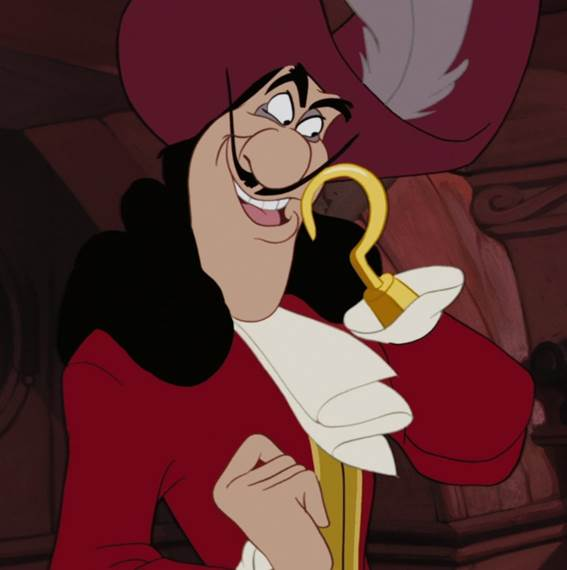
Figure 15. 胡克船长
Tick-Tock出生于彼得·潘故事发生的的前几年，在梦幻岛的海岸上孵化。 他被一个名叫罗塞塔的仙女收养。他是小叮当的早期朋友，并误认她为自己的母亲。 刚出生不久，这条年轻的鳄鱼就登上了一位年轻的海盗船长詹姆斯的船上，詹姆斯在未来会成为令人恐惧的胡克船长。 鳄鱼在詹姆斯的船上逃逸时，不小心吞下了其中一名船员的闹钟，因而获得了他的标志性绰号。 乘船冒险还将导致Tick-Tock与Hook首次相遇，他误认为船长是鳕鱼，这促使他在海中不停地追逐这位可怜的人。
几年后，Tick-Tock最终长到了一个巨大的体形，并且他持续追逐着詹姆斯。 然而，有一天，彼得·潘在战斗中切断了詹姆斯的手，将其作为零食喂给了Tick-Tock，从而进一步加剧了鳄鱼的饥饿感。 幸运的是，詹姆斯在失去了一只手后被称为胡克船长，每当鳄鱼在附近时，Tick-Tock肚子上滴答作响的闹钟都会发出警告，让Hook可以为危险时刻的到来做好准备。
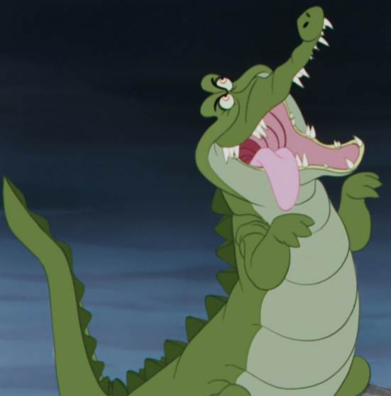
Figure 16. 鳄鱼Tick Tock
毒酒，原作中tinker bell为了阻止彼得潘喝下毒酒，自己代替他喝下而死，随后tinker bell在孩子们的鼓掌声中复活。
一座在建的摩天大楼壮观的倒塌了。
这句话出现在选择“召回小叮当的灵魂”的选项之后。实际上，在2004年夏季在建的建筑物是西新宿的新宿新都心城市大厦。
当然，它现在早已安全竣工，并没有倒塌。。。目前这栋建筑正作为高级公寓使用。
Figure 17. 新宿新都心城市大厦
十八世纪的西方水手喜欢哼的一种号子。在各种文艺作品的海盗歌谣中都有出现。和本作有关的海盗题材作品不止《彼得潘》，还有《金银岛》，详见第七章。
当然就是《爱丽丝漫游奇境记》里那只引爱丽丝掉入兔子洞的兔子。
值得注意的是按照黛的自述她在掉入下水道的过程中遇到了这只兔子，是否是和她能够听懂小叮当的话语一样在暗喻她也是一位爱丽丝？